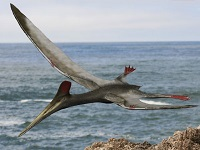

| Name |
Picture |
Description |
Tyrannosaurus |
 |
Tyrannosaurus was a bipedal carnivore with a massive skull balanced by a long, heavy tail. Relative to the large and powerful hind-limbs, Tyrannosaurus forelimbs were small but still powerful. Tyrannosaurus was the one of the largest known land predators, growing over 12 metres in length and weighing almost 7 tonnes. What is not commonly known is the Tyrannosaurus teeth were 6 inches long, but only had shallow roots in the gums, so may not have been capable of eating solid meat. |
Velociraptor |
 |
Velociraptor was a bipedal, carnivore with a long tail and an enlarged sickle-shaped claw on each hind-foot, which is thought to have been used to kill its prey. |
Triceretops |
 |
Triceratops was a herbivorous dinosaur. Bearing a large bony frill and three horns on its large four-legged body, Triceratops is one of the most recognizable of all dinosaurs. It shared the landscape with and was preyed upon by the fearsome Tyrannosaurus. |
Brachiosaurus |
 |
Brachiosaurus had a proportionally long neck, small skull, and large overall size. Brachiosaurus was a herbivore and it is regarded as a high browser, probably cropping or nipping vegetation as high as 9 metres off of the ground. |
Archaeopteryx |
 |
Archaeopteryx could grow to about 0.5 m in length. The body and forelimbs of Archaeopteryx were covered in feathers, which were just like modern bird feathers. |
Pterodactyl |
 |
Pterodactyl was a flying carnivore and probably preyed upon fish and other small animals. The wings of Pterodactylus were formed by a skin and muscle membrane stretching from its elongated fourth finger to its hind limbs. |


{kind=link}